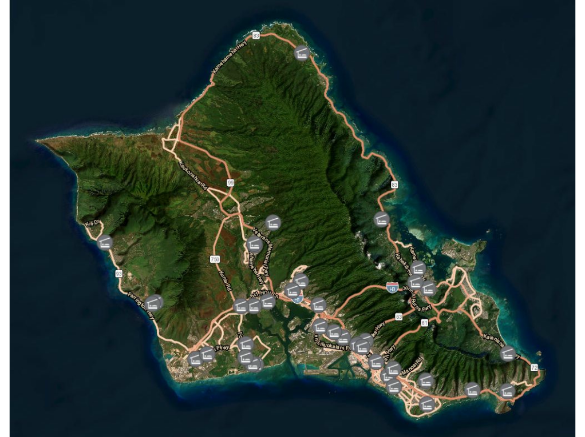

Hurricane 911 Calls
128
Synthetic Category 5 tabletop assumption · not a historical hurricane average
Public Oʻahu resource context + synthetic exercise inputs. Honolulu EMS unit counts are linked to public sources. Hurricane-call, CBO/volunteer, and assistance-intake figures are synthetic scenario assumptions, not live reports or operational status.
Reference values transcribed from the supplied screenshot
U.S. Department of Health and Human Services · Electricity-Dependent Population Planning
Candidate · ZIP level · Medicare only · privacy-masked · not a live local feedBackground image supplied by the team · illustrative bathymetry only, not operational GIS data.
Cyber Coalition’s proposed Common Operational Framework connects public aggregate evidence and synthetic partner inputs to hazard-specific coverage, CMIST planning considerations, source review, resource questions, and human-reviewed coordination. It frames a statewide four-hazard design and a bounded fictional Kapolei hurricane pilot. This static workbench is not operational, and the pilot does not prove statewide hazard coverage.
The Saffir-Simpson category rates maximum sustained wind only. It does not describe storm surge, rainfall flooding, tornadoes, or local impacts. The scenario keeps those hazards and assumptions separate for review.
Move from a fictional event to a human-reviewed county plan and a state-support request modeled on Hawaiʻi's documented RFA/RFI process.
Define the planning question and the call to action.
Record backstory, time, geography, hazard assumptions, and fictional inputs.
Identify stakeholders, responsibilities, source owners, and native data geography.
Separate documented findings, inferences, assumptions, and open questions.
Walk through feasible scenarios, resource checks, and human decision points.
Document the proposed plan, owners, measures, and a state-support pathway modeled on HI-EOP §5.3 and the SESF #6 RFA process.
Proposed emergency-management priorities, objectives, and resources for planning review—not confirmed operational capabilities or individual assessments.
Resources to be identified.
Proposed planning end state. Not a confirmed or achieved operational status.
Primary Emergency Operations Centers are established, with response operations centers on standby. Communication channels are operational, and partner telecommunications vendors are deployed to the most severely affected areas lacking communications. Time-sensitive health risks are addressed. People with access and functional needs (AFN) are supported with compassion and dignity and, when evacuation is necessary, transported to appropriate evacuation shelters or medical facilities.
Circular category illustrations are original, simplified symbols inspired by the Colorado DHSEM CMIST resource newsletter.
Walk through how a fictional request can be organized for human review during the Kapolei tabletop scenario.
The generated review is temporary in this browser page only. It is not a real report or service request. A human coordinator would need to confirm the source, need, availability, accessibility, and safe delivery before any real response.
A high-end wind stress test to examine county-led mass-care planning, accessible sheltering, continuity needs, transportation barriers, and requests for state support. The Category 5 label describes sustained wind only. Surge, rainfall flooding, tornadoes, impact timing, footprint, participation, outages, and resource availability remain separately defined scenario inputs, not measured conditions.
NHC Saffir-Simpson Hurricane Wind Scale
“Unknown” is visible in the output. The prototype does not fill missing values by inference.
Toggle fictional injects to see how planning questions change. This static demonstration uses synthetic assumptions; it has no live feeds and makes no operational recommendations.
All three fictional injects are active. Power-dependent needs, communications continuity, and route access are flagged for human review.
Capacity, shelter suitability, current operations, route safety, and service availability remain unknown unless an authoritative source confirms them.
Candidate data are useful only when geography, date, meaning, and limitations remain visible.
Use as modeled hazard and risk context. It is not an event forecast or a local shelter-capacity measure.
De-identified Medicare claims context for electricity-dependent equipment and selected services. Small values are suppressed; ZIP-level counts must not be split across tracts.
Candidate points and source flags. Capacity, current designation, opening status, ADA compliance, staffing, and hurricane-wind suitability are not established by the list.
1993 assessments document past Oʻahu sheltering, information, and evacuation findings. They establish historical evidence, not current deficiencies.
The signed State of Hawaiʻi Emergency Operations Plan (HI-EOP, Feb 2026) and the SESF #6 Mass Care Annex (Sep 2025) are public and document the actual county-to-state request pathway this demonstrator now models (county EOC → RFA/RFI via WebEOC → SEOC Operations Section → tasked SESF #6 primary agency). Shelter capacity/accessibility, staffing levels, and partner agreements by name are not published in these documents and remain unknown.
HI-EOP Base Plan (signed, Feb 2026) · SESF #6 Mass Care Annex · HI-EMA EOP and annexes index · Honolulu DEM
The current StateGIS OHCA query contains 39 source records inside the Kapolei CDP and 37 exact source-address plus six-decimal-coordinate keys. Keys are not verified unique sites. Co-located records retain separate facility types and credentials unless the authoritative owner confirms the match.
SVI/NRI and some Census measures are tract-level; emPOWER is ZIP-level; shelter locations are points. Show native units separately unless a defensible, documented crosswalk supports an approximate comparison.
These are source links supplied by Jeff, deduplicated by ArcGIS item ID. Listing a link does not validate its title, layer content, currentness, suitability or reviewer access. The separately documented project sources remain in the register below.
| Slot | Reference / source attribution | Link | Geographic scope | Data limitations | Status |
|---|---|---|---|---|---|
| 1 | Low Income and Disadvantaged Communities (LIDAC) Identified 2026-11-19 · item ID 953150da64a847e7b6506e07f715d060 | Open source map | Statewide | Title and public access confirmed via the ArcGIS Portal API 2026-11-19. Feature content, fields, and vintage not yet pulled. Equity layer not currently used by any CMIST or coverage analysis in this project. | Title & access verified |
| 2 | Medically Underserved Areas / Populations Identified 2026-11-19 · item ID d7bc5347914446c8bfa3805372c658d8 | Open source map | Statewide | Title and public access confirmed 2026-11-19. Directly relevant to the Maintaining Health CMIST row, which currently lists only one resource. Feature content not yet pulled. | Title & access verified |
| 3 | Statewide Fire Stations – All Types Identified 2026-11-19 · item ID 90d638beadec48da92c9369e92c43a8b | Open source map | Statewide (111 records) | Same item reconciled in the evidence register's supporting-layer table (111 point records, by island/status). Not an independent source from slot 3 of the reference map's own layer list. | Reconciled in evidence register |
| 4 | Trauma Centers Identified 2026-11-19 · item ID 21e89c35d7e1425bb6c9cc07e9f6f72d | Open source map | Statewide (10 records); Oʻahu subset proposed | Same item reconciled in the evidence register (10 records: Oʻahu 5, Hawaiʻi Island 3, Maui 1, Kauaʻi 1). Trauma level and current designation still require DOH confirmation. | Reconciled in evidence register |
| 5 | Police Stations (Statewide) Identified 2026-11-19 · item ID 1f063b8a5e7f4abeb8da50cd8d75947e | Open source map | Statewide (not yet filtered to Oʻahu) | Title and public access confirmed 2026-11-19. Still not spatially filtered to Oʻahu; no feature count pulled yet. | Title & access verified |
| 6 | Fire Response Zones Identified 2026-11-19 · item ID 66a59db4bc31459298b28a94564de533 | Open source map | Statewide | Title and public access confirmed 2026-11-19. Response-coverage polygons, distinct from the Fire Stations point layer; not yet used in any coverage analysis. | Title & access verified |
| 7 | EMS Stations Identified 2026-11-19 · item ID bf706be992254fec9e9565d58062b32f | Open source map | Statewide (56 records) | Same item reconciled in the evidence register (56 records by county/affiliation). Not an independent source. | Reconciled in evidence register |
| 8 | Hospitals Identified 2026-11-19 · item ID 0d854c26882c46b9bf4431ba7c9a5ea4 | Open source map | Statewide (28 records) | Same item referenced in the statewide OHCA reconciliation (duplicate of the OHCA hospital subset; do not double-count against the 39-record Kapolei extract). | Reconciled in evidence register |
| 9 | Census Blocks (2020) Identified 2026-11-19 · item ID 7b7038d99619418e95aaf4be2967e34b | Open source map | Honolulu (hosted on a separate org, cchnl.maps.arcgis.com) | Title and public access confirmed 2026-11-19. Block-level geography is finer than the tract-level denominator (461 tracts) used throughout this project; no block-level join has been attempted. | Title & access verified |
| Doc. | Project ArcGIS reference map (26 layer-list entries plus one review table), Cyber Coalition ESF-6 | ArcGIS item | Hawaiʻi statewide and Kapolei QA layers | Sharing reconfirmed public 2026-11-19 via anonymous Portal API check. Tract-ID reconciliation (461/435/26) is not hazard-specific coverage validation. | Documented in repo |
| Doc. | State of Hawaiʻi StateGIS OHCA Facilities, HumanHealthSafety MapServer/3 | Layer | Kapolei CDP queried (39 records, 37 address keys) | Status value 0 undefined; capacity units undefined; keys are not verified unique sites. | Documented in repo |
| Doc. | Hawaiʻi Statewide GIS Hub | Map Viewer | Statewide discovery | Each layer's owner, date, licensing, and fields need review. | Documented in repo |
Record what a source says, what we infer, and what still needs an owner to confirm.
| Evidence or question | Class | What it supports | What it does not establish | Next check |
|---|---|---|---|---|
| ʻIniki public sheltering and evacuation assessment (1993) | Historical finding | Test variable demand, shelter staffing, communications, parking, access, public information, and shelter services. | That the same problems exist today or that every Oʻahu community experienced them. | Find later Oʻahu hurricane studies, exercise AARs, and current facility procedures. |
| State shelter CSV and source flags | Catalog source | Candidate point locations and fields for a preliminary map. | Capacity, current opening status, ADA compliance, wind resilience, or operational availability. | Recount rows; trace list owner, update date, flag definitions, and current official status. |
FEMA Mission Assignments supportFunction (v2 field dictionary; retrieved 2026-11-09T03:53:35Z) | Schema verified | Nullable integer: 0 Other; 1–15 ESFs; 16–21 RSFs; 22 legacy/expired Long-Term Community Recovery code; null missing. Code 14 is Cross-Sector Business and Infrastructure. | That obligations equal actual costs, unmet local needs, or response effectiveness; this field does not establish all ESF activations. | Reproduce counts, amendments, and amounts from retained exports; keep the dictionary version and retrieval timestamp with the analysis. |
| HHS emPOWER counts | Privacy-constrained source | Aggregate Medicare claims context by supported geography. | All people with power-dependent needs or exact neighborhood/tract distribution. | Retain the published geography and masking rules; avoid disaggregation. |
| Kapolei OHCA Facilities layer, queried 2026-11-14; underlying geocoding metadata reports 2026-09-15 source data | Working reconciliation | 39 source records spatially intersect the Kapolei CDP; 37 source-address/coordinate keys; candidate associations among site records and separate licenses. | 37 verified facilities, current licenses, current service operations, status meaning, capacity units, or emergency availability. | Ask OHCA/StateGIS to confirm site identity, separate credential relationships, the operational-status domain, capacity units/meaning, and current status. |
| Current shelter capacity, accessibility, and operational status | Open question | Nothing until a current authoritative source confirms it. | Absence from the Datatrove catalog does not prove no record exists. | Identify a public/shareable authoritative source and its owner/update cadence. |
| 2023 Maui wildfire reviews applied to hurricane mass care | Transferability question | Potentially relevant functions if the report pages and source are verified. | Direct evidence of an Oʻahu hurricane gap. | Read the primary reports, check page references, and map only functionally relevant lessons. |
The Datatrove headline-results report corrects earlier schema/field claims and flags an impossible January 2026 retrieval date in an earlier audit. Preserve the corrected report, but retain raw source queries and timestamps before publishing aggregate results.
Every stage leaves a traceable record and a clear owner for unresolved information.
Targets are proposed only after the protocol is defined; observed results are recorded separately.
Scenario forecast package becomes available to the planning team.
Human-reviewed plan packet includes source-linked needs context, resource status, open questions, owner, and a state-support pathway modeled on the HI-EOP/SESF #6 RFA process.
Repeat the same tabletop task with a documented baseline and with the prototype. Report actual time and completeness; do not claim a benefit before measurement.
These are evidence requests, not claims that agencies have failed.
Seek a public or authorized source for capacity, accessibility audits, wind suitability, staffing, and activation status. Keep unavailable fields marked unknown.
Request public/shareable reports and page-specific recommendations; distinguish historical closure evidence from present-day status.
Resolved in part: the signed HI-EOP (Feb 2026) §5.3 and the SESF #6 Annex (Sep 2025) are public and document the County EOC → RFA/RFI via WebEOC → SEOC Operations Section → SESF primary-agency tasking process this demonstrator now models. Still open: HIEMA has not reviewed or confirmed that this demonstrator's depiction matches current operational practice, and SESF #7/#2 (logistics, communications) have not yet been reviewed.
Set the metric before timing a repeatable exercise; report the observed result and limitations.
Shows what the project can substantiate today, what the map context means, and what still needs evidence.
The candidate StateGIS Census and Coastal SVI sets each match 435 of the 461 official 2020 Census tract GEOIDs. The 26 Census-only GEOIDs are absent from both candidate sets and were recorded with zero population and housing in the reviewed 2020 Census inventory. This is base-geography reconciliation only; it does not establish zero need.
This map opens the selected project layer for spatial reference. It does not visualize the 435-of-461 GEOID comparison or establish hazard-by-hazard tract totals. Open the interactive map in a new tab.
Base-geography matching validates identifiers for reconciliation. It does not validate hazard overlays, CMIST estimates, source freshness, or resource availability. The reference map's own item description (2026-11-18, reconfirmed public 2026-11-19) states 26 layer-list entries (10 Kapolei QA/boundary + 16 statewide/reference) and one Hospital - Review table; this does not mean all layers are validated.
Each row distinguishes a map or model from observed impact and reported service need.
| Hazard | Current project context | What it can support | What it cannot prove | Validation state |
|---|---|---|---|---|
| Hurricane | Fictional Kapolei wind-stress tabletop; FEMA NRI modeled context; historical ʻIniki reports | Planning questions and repeatable scenario inputs | Current impacts, present-day deficiencies, shelter suitability, or AFN counts | Scenario only |
| Wildfire | FEMA NRI modeled risk context | Long-term modeled risk context with source vintage retained | Active fire perimeter, forecast, observed impacts, evacuation status, or service need | Modeled context |
| Tsunami | StateGIS evacuation and safe-zone reference layers | Map-based planning context for review | Current impact, safe route, staffed facility, or verified shelter capacity | Operational facts unknown |
| Flood | DFIRM-area overlay summary for 435 input tracts | Mapped flood-area intersection by source geography | Unique affected people, AFN needs, shelter demand, or current flood conditions; grouped T/F rows remain distinct | Area context only |
| Earthquake | Named separately in challenge section 4 | Scope question for HAIC clarification | Inclusion in the committed four-hazard baseline or a completed earthquake deliverable | Scope decision open |
The statewide coverage ledger still needs actual county/island × hazard × geography × CMIST × source-vintage counts. The Kapolei pilot demonstrates a method in one bounded scenario; it is not proof of statewide completeness.
Counts per hazard for the 435 tracts present in the FEMA National Risk Index tract layer (version December 2025), plus the project's own DFIRM flood overlay, against the 461 official 2020 tracts retrieved from the Census. Reproduced from live queries by scripts/build_hazard_tract_ledger.py.
| Hazard | Type | Source field | Matched | Positive | Zero | Missing value | Invalid | Not in source (of 461) |
|---|---|---|---|---|---|---|---|---|
| Hurricane | Modeled risk (FEMA NRI, December 2025) | HRCN_RISKV | 435 | 434 | 1 | 0 | 0 | 26 |
| Wildfire | Modeled risk (FEMA NRI, December 2025) | WFIR_RISKV | 435 | 304 | 131 | 0 | 0 | 26 |
| Tsunami | Modeled risk (FEMA NRI, December 2025) | TSUN_RISKV | 435 | 229 | 8 | 198 | 0 | 26 |
| Flood, coastal | Modeled risk (FEMA NRI, December 2025) | CFLD_RISKV | 435 | 203 | 232 | 0 | 0 | 26 |
| Flood, inland | Modeled risk (FEMA NRI, December 2025) | IFLD_RISKV | 435 | 433 | 2 | 0 | 0 | 26 |
| Flood, SFHA overlay | Overlay (project DFIRM result, read-only) | sfha_tf='T' area (project DFIRM result) | 435 | 306 | 129 | 0 | 0 | 26 |
Positive, zero, missing and invalid describe each tract's value for that row's field. Every missing tsunami value carries the source rating "Not Applicable"; every risk zero carries the source rating "No Rating", and what that label means in the NRI method has not been checked here, so a zero is not read as "no hazard". Flood appears three times and the rows are not combined: coastal and inland modeled risk, and the DFIRM overlay. In the overlay, a zero means the summarized DFIRM polygons have no special-flood-hazard-area (sfha_tf='T') area in that tract, not that flooding cannot occur; the meaning of sfha_tf is taken from the layer name, and the DFIRM input item and vintage are not recorded on the project's item. Provenance, terms and what a fuller measurement still needs are in the ledger data README.
Each goal has a baseline, a target, a method, and a result. Targets marked proposed are the team's to set. Results stay blank until a run produces them.
| Goal | Baseline (this repository) | Target | Method | Result |
|---|---|---|---|---|
| 1. Hazard-specific AFN maps for every county and tract | No AFN-by-hazard tract map is produced. Interim input only: hazard-side modeled risk exists for 435 of 461 tracts for each hazard (ledger above). That is not the goal result. | 100% of census tracts (source-reported: the challenge PDF as recorded in the project scope) | Per hazard, count tracts with a valid hazard value and a reviewed AFN estimate, over 461. List the tracts not evaluated. | Not measured |
| 2. CMIST estimates reviewed by authorized partners | No CMIST estimate has been run, so none has been reviewed. | Proposed: every estimate shown carries a recorded disposition, rationale, and date from an authorized county or DHS reviewer. | Reviewer worksheet; counts by disposition, including estimates with none. | Not measured |
| 3. Shorter time to a coordinated needs-and-resources planning option | Not measured. A manual baseline is to be timed on the same synthetic scenario. | Proposed: the tool-supported run reaches reviewer approval faster than the manual baseline with all five required elements present. No numeric threshold until a baseline exists. | Repeated, timed, human-reviewed tabletop runs; every run reported. | Not measured |
Tabletop observations on synthetic input are not real-world performance. Definitions: planning goals. Protocol and run log: tabletop evaluation protocol.
Every stage keeps observations, modeled context, assumptions, and human decisions visibly separate.
Separate synthetic need reports from service offers; keep each CMIST category and time window explicit.
Record owner, item or URL, date, vintage, fields, native geography, and evidence class.
Join only supported GEOIDs; show unmatched tracts and preserve source scale.
Label observations, modeled risk, map overlays, and scenario assumptions separately.
Keep status unknown until an authorized owner confirms date, capacity, access, and availability.
Produce a traceable planning option or a State-support request modeled on the HI-EOP/SESF #6 RFA process; people retain authority.
Use this checklist before a source-backed claim moves from candidate context to reviewed evidence.
Demonstrates synthetic aggregate-need reports and service offers across the four-hazard baseline. Earthquake and other hazards are scope-review extensions. ArcGIS layers provide reference context, not live intake sources or need counts.
These are reconciled reference findings, not live layers. The page does not query ArcGIS or infer affected people from a map overlay.
The strict 2020 Census denominator is 461 tracts. The candidate project set contains 435; 26 are outside that set. A missing candidate record does not mean no AFNs or no need.
Project tract layer · item 06c11dc7…The saved output summarizes intersecting DFIRM area for the 435 input tracts. The grouped T/F rows are not unique affected-person counts; mapped area is not AFN need or shelter demand.
Flood result layer · item ae7b936c…NRI scores are modeled, long-term risk context. They are not event footprints, forecasts, observed impacts, or counts of people needing services.
FEMA NRI source (reviewable) · Raw REST tract layer 0Mapped evacuation and safe-zone layers support planning context. They do not establish current impacts, safe routes, staffed facilities, or verified shelter capacity.
Honolulu DEM Extreme Tsunami & Evacuation Zones (reviewable) · Raw REST statewide hazards serviceChoose whether the example is an aggregate need report or a service offer. One CMIST category per record keeps the report reviewable. All records are synthetic, held in this page session only, and disappear on reload; the static page does not collect or return stakeholder data.
No network calls. Demo records remain in this page session and disappear when it is reloaded.
Validation and matching are shown as separate human-controlled steps. The demo never assigns a service automatically.
Planning categories for ESF-6 coordination. Three evidence levels are kept separate: mapped facilities (a location appears in a source layer), estimated resources (a modeled or reported quantity with a stated source), and verified operational availability (confirmed by the owning agency for a stated time).
Oʻahu · public planning reference
Potential locations only; current opening, capacity, accessibility, and availability are unconfirmed.
Open interactive ArcGIS map Source: Honolulu DEM
| Category | Mapped facilities | Estimated resources | Verified operational availability | GIS / evidence crosswalk |
|---|---|---|---|---|
| Ambulances | 24 published EMS unit-location rows (not geocoded in this prototype). | 23 Oʻahu EMS ambulance units reported by Honolulu EMS, across 4 districts; 24 location rows require reconciliation. | Not verified | Honolulu Emergency Services Department — EMS Unit Locations. Agency describes all 23 ambulance units as advanced life support (ALS); listing entries do not establish independently available ambulances, staffing or current dispatch status. |
| Fire engines | No station or apparatus data loaded. | None entered | Not verified | Needs county fire department confirmation; wildfire scenarios depend on it. |
| Police stations | No station layer loaded. | None entered | Not verified | Locations need an authoritative public source; staffing and posture are not shown. |
| Trauma centers | Kapolei OHCA extract is a licensed-facility QA set and does not designate trauma centers. | None entered | Not verified | Trauma designation must come from the designating authority; do not infer it from the OHCA layer. |
| Medical aircraft | None mapped. | None entered | Not verified | Air ambulance bases and fleets need operator confirmation; availability varies with weather and tasking. |
Counts are provisional and should not be interpreted as deployed, staffed or mission-ready assets. No city-by-city distribution has been independently validated.
| Resource | Oʻahu planning figure | Statewide figure | Evidence / unresolved question |
|---|---|---|---|
| County emergency ambulances (ALS) | 23 ambulance units officially reported; 24 rows in the published location roster (D1: 5, D2: 9, D3: 5, D4: 5) | Unknown; Oʻahu-only figure | Honolulu Emergency Services Department — EMS Unit Locations (official). The agency says 23 EMS ambulance units across four districts and lists 24 unit-location rows. Row count may not equal unique transport ambulances. Verify discrepancy and current dispatch availability with EMS before operational use. |
| Fire engines | 43 previously reported | Unknown | HFD station dataset. Engine count and city assignments require direct HFD validation; station ≠ available engine. |
| Police stations | Count unverified; Oʻahu only | Not in local scope | Source map. Oʻahu spatial filter not yet executed; personnel and dispatch availability unknown. |
| Trauma centers | Count / designations unverified; Oʻahu only | Not independently counted | Source map · DOH trauma guide. Trauma designation is not a measure of current surge capacity. |
| Dedicated civilian medical helicopters | Oʻahu-based fleet unknown | 7 total previously reported (3 911 / 4 interfacility) | DOH EMS inventory. Distinguish providers, mission category, aircraft and readiness; statewide figure needs revalidation. |
| Fixed-wing air ambulances | Oʻahu-based fleet unknown | 10 previously reported | DOH inventory above; do not combine with rotary wing or count as Oʻahu-based without evidence. |
Oʻahu, agency-published planning baseline. Counts in the district column are the number of listed roster rows, not confirmed separate ambulances available for dispatch.
| EMS district | Published location rows | Communities / unit names on source roster |
|---|---|---|
| D1 | 5 | Waiʻanae, Waipahū, Makakilo (Kapolei), Nānākuli (Waiʻanae), ʻEwa Beach |
| D2 | 9 | Pāwaʻa I, Baker I, Metro I, Charlie I, Makiki, Sierra One, Salt Lake, Kakaʻako (Honolulu), Response One (Ko Olina) |
| D3 | 5 | Kailua, Kāneʻohe, Wailupe (Honolulu), Waimānalo, Hawaiʻi Kai (Honolulu) |
| D4 | 5 | ʻAiea, Kahuku, Waialua, Wahiawā, Waipiʻo (Waipahū) |
Official reference: City and County of Honolulu — EMS Unit Locations (consulted 18 November 2026). Official text: 23 ALS ambulance units / 4 districts. Published roster: 24 rows. District locations are addresses or labels, not response territories. Source does not provide real-time staffed or available ambulances.
Choose a community to filter published EMS unit-location listings. Figures are roster entries at addresses, not independently verified vehicle counts or real-time ambulance availability.
| City / community (published address) | Listed EMS entries | District(s) |
|---|---|---|
| Honolulu | 10 | D2 / D3 |
| Waiʻanae | 2 | D1 |
| Waipahū | 2 | D1 / D4 |
| Kapolei | 1 | D1 |
| Ko Olina | 1 | D2 |
| ʻEwa Beach | 1 | D1 |
| Kailua | 1 | D3 |
| Kāneʻohe | 1 | D3 |
| Waimānalo | 1 | D3 |
| ʻAiea | 1 | D4 |
| Kahuku | 1 | D4 |
| Waialua | 1 | D4 |
| Wahiawā | 1 | D4 |
| Displayed total | 24 | 13 communities |
Source: Honolulu Emergency Services Department — EMS Unit Locations, checked November 18, 2026. Community is based on the published street address; a location is not an EMS service or response boundary. Honolulu EMS reports 23 ambulance units, while the published list contains 24 location entries. This table counts those entries, not confirmed operational ambulances.
Potential federal military capabilities that planners may need to understand when state and local resources are exceeded.
| Potential asset | Possible role | Authorization / request path | Availability |
|---|---|---|---|
| MEDEVAC aircraft | Patient movement by military air asset. | Requires an appropriate request, authorization, and coordination; to be confirmed with HI-EMA/FEMA and the supporting military authority. | Not confirmed |
| Utility helicopters | Passenger, cargo, and light rescue transport. | Requires an appropriate request, authorization, and coordination; to be confirmed with HI-EMA/FEMA and the supporting military authority. | Not confirmed |
| Heavy-lift helicopters | Large cargo and equipment movement. | Requires an appropriate request, authorization, and coordination; to be confirmed with HI-EMA/FEMA and the supporting military authority. | Not confirmed |
| Light Medium Tactical Vehicles (LMTVs) | Ground transport where roads are degraded. | Requires an appropriate request, authorization, and coordination; to be confirmed with HI-EMA/FEMA and the supporting military authority. | Not confirmed |
| High-water vehicles | Movement through flooded areas. | Requires an appropriate request, authorization, and coordination; to be confirmed with HI-EMA/FEMA and the supporting military authority. | Not confirmed |
National Guard status may be State Active Duty, Title 32 or federal Title 10. HIANG is not synonymous with the combined Hawaiʻi National Guard or Hawaiʻi Army National Guard. These figures are not automatically Title 10 assets.
| Asset / unit | Oʻahu | Statewide | Evidence and constraint |
|---|---|---|---|
| Dedicated MEDEVAC rotary wing (federal Title 10) | Unverified | Unverified | Aircraft inventory, basing, command status and mission authorization require military confirmation. |
| General-purpose rotary wing (UH-60 or equivalent) | Unverified | Unverified | Do not equate all utility aircraft with medically equipped MEDEVAC aircraft. |
| Heavy-lift rotary wing (CH-47 or equivalent) | Unverified | Unverified | Availability and support authority unknown; no fleet number implied. |
| HIANG / HING LMTVs and MTVs | Vehicle fleet unknown | Vehicle fleet unknown | Exact allocation to HIANG versus HIARNG not verified; record only confirmed owning component. |
| HING high-water vehicle teams (historical deployment) | 13 teams (March 2026 report) | 21 teams (March 2026 report) | Hawaiʻi DoD Kona Low response. Teams are not vehicle fleet totals or current taskable capacity. |
Planning context for commercial carriers and communications continuity. Published coverage is kept separate from verified post-disaster service availability.
Carrier coverage depends on a longer chain most planning conversations skip: power, then fuel, then data centers, then undersea connectivity, then local towers, then people. Full working notes with classification and confidence per finding.
| Layer | Working finding | Classification |
|---|---|---|
| Data centers | Two main Oʻahu facilities carry most load — DRFortress (Honolulu) and AlohaNAP (Kapolei); DRFortress reports on-site diesel to ~80 hours at full load. | Source Reported Claim · Moderate confidence |
| Out-of-state connectivity | Nearly all Hawaiʻi-to-mainland traffic rides a small number of undersea cables; landing sites are concentrated single points of failure. | Analysis · Moderate confidence |
| Fuel | Oʻahu fuel arrives largely through the harbor and Kapolei refinery; port damage could cut generator resupply statewide. No defined priority order (hospitals vs. shelters vs. cell towers vs. data centers) after ~80 hours. | Analysis · needs HI-EOP validation |
| Fallback layers if internet fails | In order: satellite (Starlink), inter-island local networks, HF radio, Winlink (email over radio), AREDN, Meshtastic (phone-to-radio mesh, Bluetooth, no cell/internet/satellite needed), then planned offline operation. | Analysis · Moderate confidence |
Equipment options and their planning applications for hurricanes, tsunamis, wildfires, floods and extended outages. These are planning requirements to discuss with vendors, not an equipment inventory or confirmed deployment package.
| Equipment | Planning application |
|---|---|
| COW — Cell on Wheels | Temporary cellular coverage in affected or underserved areas. |
| COLT — Cell on Light Truck | Rapid communications restoration and localized coverage support. |
| Satellite internet terminals | Connectivity when terrestrial backhaul or infrastructure fails. |
| Portable Wi-Fi hotspots | Connectivity for shelters, field teams and temporary public access. |
| Mobile command vehicles | Incident coordination and communications for mobile emergency operations. |
| Satellite phones | Backup voice communications when cellular networks are unavailable. |
| Portable generators | Backup power for communications sites and response equipment, subject to safe operation and fuel logistics. |
| Mobile charging stations | Charging access for displaced residents and response personnel. |
| Loaner cellular devices | Temporary communications for authorized emergency personnel and partner agencies. |
| Airborne cellular platforms | Temporary coverage over affected areas where authorized and available. |
Carrier-published coverage maps are planning estimates. They do not verify service at a given site or after a disaster.
Carrier-published coverage maps are planning estimates. They do not verify service at a given site or after a disaster.
Carrier-published coverage maps are planning estimates. They do not verify service at a given site or after a disaster.
Examples of publicly advertised programs and equipment, not confirmed Hawaiʻi deployment commitments. Availability, activation eligibility, costs, lead times, and site-level suitability require direct vendor confirmation.
These are publicly described national capabilities; no vendor agreement, Hawaiʻi-specific quantity, deployment commitment, response time or availability has been verified.
| Vendor / program | Potential deployable support | Official program reference | Hawaiʻi availability |
|---|---|---|---|
| Verizon Frontline Crisis Response | Portable cellular coverage, satellite-backed connectivity, loaner devices, charging and command support, subject to eligibility and deployment conditions. | Verizon Frontline | Unknown |
| T-Mobile T-Priority Emergency Response | Eligible agency priority services, emergency response assistance, mobile network and satellite-supported options subject to program conditions. | T-Mobile T-Priority | Unknown |
| AT&T FirstNet Response Operations | Deployable cellular and satellite-backed equipment, portable kits and emergency network support for eligible public-safety agencies. | FirstNet Response Operations | Unknown |
| Level | Planning question | Entry |
|---|---|---|
| Primary | What is the normal method for each partner? | To be completed with partners |
| Alternate | What works if the primary fails (e.g., a different carrier or channel)? | To be completed with partners |
| Contingency | What works if cellular and data service are degraded? | To be completed with partners |
| Emergency | What is the last-resort method, and who has authority to use it? | To be completed with partners |